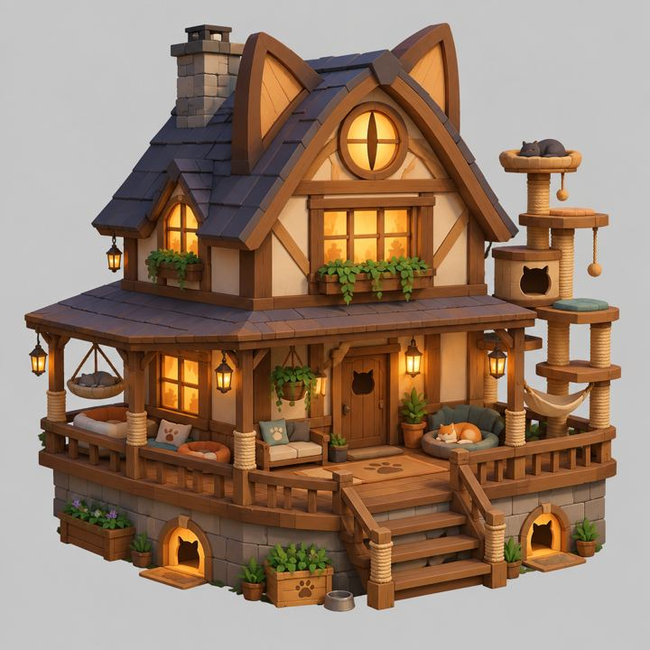

The cats are waking up…
No tokens yet · example cats
A home for token cats on Solana
Every cat here is a token.
Each resident is a cat coin the sanctuary launched on StonkFun. Once its launch is confirmed on Solana, it moves in and lives here like a real cat: it naps, stretches, sits a while, then wanders off.
Drag to look around · tap a cat
Residents
No tokens have launched yet. Until the first one does, the garden shows example cats so you can see how it works. They are marked as examples and are not tokens.
How a cat comes home
Cats arrive one at a time, and nobody adds one by hand.
-
Launched on StonkFun
The sanctuary's launcher creates a cat coin priced in one tokenised stock. Each stock gets one cat.
SPYx QQQx GLDx TSLAx NVDAx AAPLx MSFTx GOOGLx AMZNx METAx COINx HOODx MSTRx CRCLx SPCXx PLTRx GMEx STRCx MCDx BRK.Bx KOx INTCx VIDAx DFDVx
-
Checked on Solana
A scheduled check reads the launch transaction and confirms the sanctuary's own launcher wallet paid for it. Anything else is left out.
-
Moves in
The cat joins the garden with its name, its ticker, the stock it's paired with and the day it arrived.
Each cat looks like the real cat linked to its stock, when there is one: the same coat and markings, and whatever that cat wears.
Company logos and mascots never go on a cat. A coin paired with a company's stock is not that company's coin.